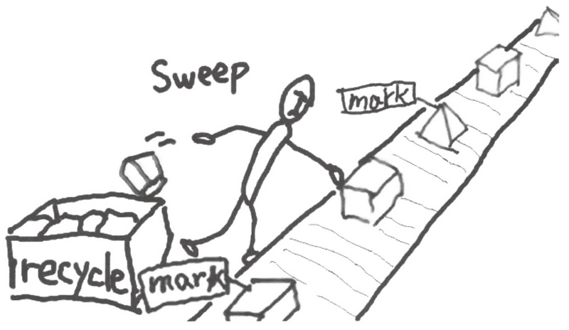
GC 标记 - 清除算法由标记阶段和清除阶段构成。标记阶段是把所有活动对象都做上标记的阶段。清除阶段是把那些没有标记的对象，也就是非活动对象回收的阶段。通过这两个阶段，就可以令不能利用的内存空间重新得到利用。
伪代码
标记-清除算法的伪代码：
1 | mark_sweep() |
回收内存部分
以下图的堆为例子，对各个阶段进行说明：
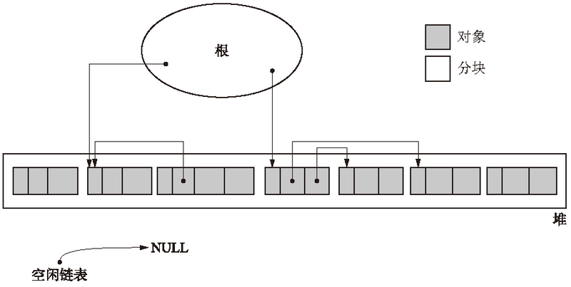
标记阶段
根据上面出现的mark_phase()函数来进行标记阶段的处理。
mark_phase()函数伪代码：
1 | mark_phase() |
在标记阶段中，collector 会为堆里的所有活动对象打上标记。为此，我们首先要标记通过根直接引用的对象。首先我们标记这样的对象，然后递归地标记通过指针数组能访问到的对象。这样就能把所有活动对象都标记上了。
mark()函数伪代码：
1 | mark(obj) |
在第 2 行中，检查作为实参传递的 obj 是否已被标记。在引用中包含了循环等的情况下，即使对已被标记的对象，有时程序也会调用 mark() 函数。出现类似这种情况的时候，我们就要避免重复进行标记处理。
如果标记未完成，则程序会在对象的头部进行置位操作。这个位要分配在对象的头之中，并且能用 obj.mark 访问。意思是若 obj.mark 为真，则表示对象已标记；若 obj.mark 为假，则对象没有被标记。
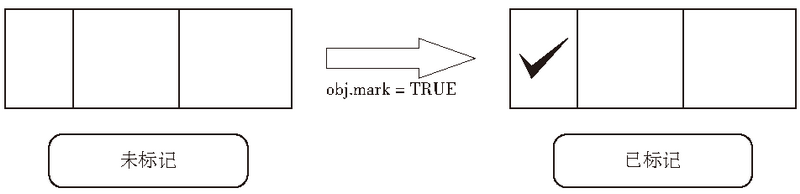
标记完所有活动对象后，标记阶段就结束了。标记阶段结束时的堆如下图所示：
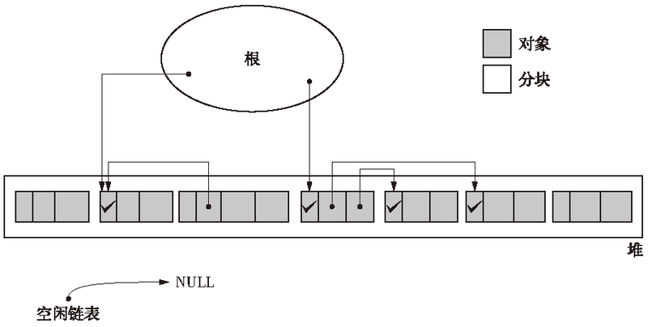
在标记阶段中，程序会标记所有活动对象。毫无疑问，标记所花费的时间是与“活动对象的总数”成正比的。
以上是关于标记阶段的说明。用一句话概括，标记阶段就是“遍历对象并标记”的处理过程。这个“遍历对象”的处理过程在 GC 中是一个非常重要的概念，在之后还会多次出现，请务必记牢。
专栏
深度优先搜索
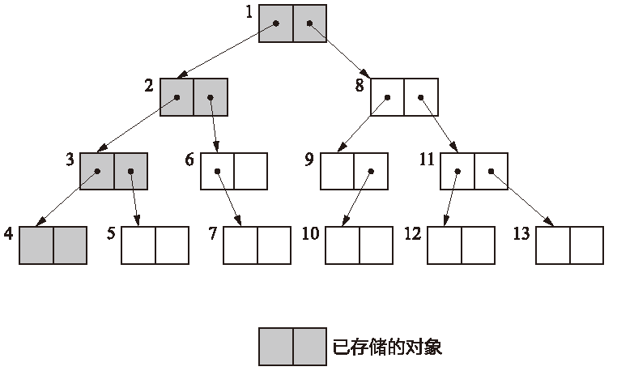
广度优先搜索
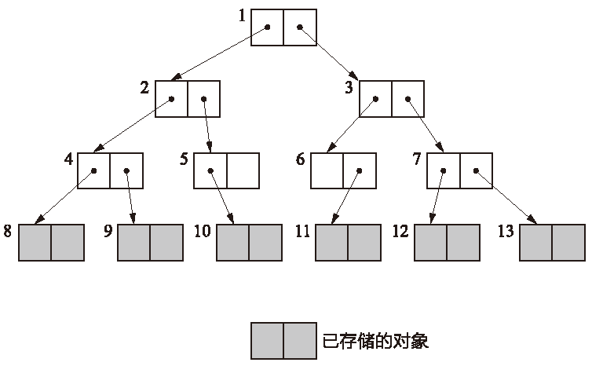
比较一下内存使用量（已存储的对象数量）就可以知道，深度优先搜索比广度优先搜索更能压低内存使用量。
清除阶段
在清除阶段中，collector 会遍历整个堆，回收没有打上标记的对象（即垃圾），使其能再次得到利用。
sweep_phase()函数伪代码：
1 | sweep_phase() |
在此出现了叫作 size 的域，这是存储对象大小（字节数）的域。跟 mark 域一样，我们事先在各对象的头中定义它们。
在清除阶段，我们使用变量 sweeping 遍历堆，具体来说就是从堆首地址 $heap_start 开始，按顺序一个个遍历对象的标志位。
设置了标志位，就说明这个对象是活动对象。活动对象必然是不能回收的。在第 5 行我们取消标志位，准备下一次的 GC。
我们必须把非活动对象回收再利用。回收对象就是把对象作为分块，连接到被称为“空闲链表”的单向链表。在之后进行分配时只要遍历这个空闲链表，就可以找到分块了。
我们在 sweep_phase() 函数的第 7 行、第 8 行进行这项操作。
在第 7 行新出现了叫作 next 的域。我们只在生成空闲链表以及从这个空闲链表中取出分块时才会使用到它。没有必要为各个对象特别准备域，从对象已有的域之中分出来一个就够了。在本章中，next 表示对象（或者分块）最初的域，即 field1。也就是说，给 field1 这个域起个别名叫 next。这跟 C 语言中的联合体（union）的概念相同。
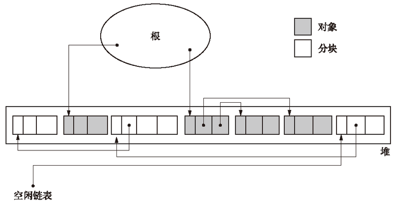
在清除阶段，程序会遍历所有堆，进行垃圾回收。也就是说，所花费时间与堆大小成正比。堆越大，清除阶段所花费的时间就会越长。
分配部分
分配
这里的分配是指将回收的垃圾进行再利用。当 mutator 申请分块时，怎样才能把大小合适的分块分配给 mutator 呢？
在清除阶段已经把垃圾对象连接到空闲链表了。搜索空闲链表并寻找大小合适的分块，这项操作就叫作分配。
执行分配的函数new_obj()伪代码：
1 | new_obj(size) |
第 2 行的 pickup_chunk() 函数用于遍历 $free_list，寻找大于等于 size 的分块。它不光会返回和 size 大小相同的分块，还会返回比 size 大的分块。如果它找到和 size 大小相同的分块，则会直接返回该分块；如果它找到比 size 大的分块，则会将其分割成 size 大小的分块和去掉 size 后剩余大小的分块，并把剩余的分块返回空闲链表。
如果此函数没有找到合适的分块，则会返回 NULL。返回 NULL 时分配是不会进行的。
专栏
First - fit、Best - fit、Worst - fit 的不同
之前我们讲的分配策略叫作 First - fit。因为在 pickup_chunk() 函数中，最初发现大于等于 size 的分块时就会立即返回该分块。
然而，分配策略不止这些。还有遍历空闲链表，返回大于等于 size 的最小分块，这种策略叫作 Best - fit。
还有一种策略叫作 Worst - fit，即找出空闲链表中最大的分块，将其分割成 mutator 申请的大小和分割后剩余的大小，目的是将分割后剩余的分块最大化。但因为 Worst - fit 很容易生成大量小的分块，所以不推荐大家使用此方法。
除去 Worst - fit，剩下的还有 Best - fit 和 First - fit 这两种。当我们使用单纯的空闲链表时，考虑到分配所需的时间，选择使用 First - fit 更为明智。
合并
前文中已经提过，根据分配策略的不同可能会产生大量的小分块。但如果它们是连续的，我们就能把所有的小分块连在一起形成一个大分块。这种“连接连续分块”的操作就叫作合并（coalescing），合并是在清除阶段进行的。
执行合并的函数sweep_phase()伪代码：
1 | sweep_phase() |
上面的sweep_phase() 函数只有第 7 行、第 8 行与上文的sweep_phase() 函数不同。第 7 行用于调查这次发现的分块和上次发现的分块是否连续，如果发现分块连续，则在第 8 行将邻接的 2 个分块合并，整理成 1 个分块。
优点
实现简单
与保守式 GC 算法兼容
GC 标记 - 清除算法因为不会移动对象，所以非常适合搭配保守式 GC 算法。
缺点
碎片化
在 GC 标记 - 清除算法的使用过程中会逐渐产生被细化的分块，不久后就会导致无数的小分块散布在堆的各处。我们称这种状况为碎片化（fragmentation）。
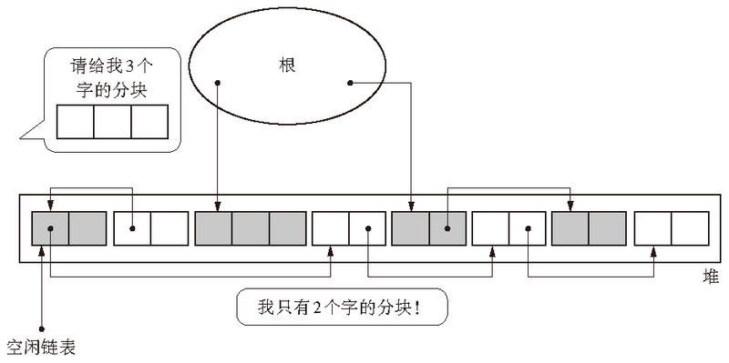
如果发生碎片化，那么即使堆中分块的总大小够用，也会因为一个个的分块都太小而不能执行分配。
此外，如果发生碎片化，就会增加 mutator 的执行负担。（把具有引用关系的对象安排在堆中较远的位置，就会增加访问所需的时间）
因为分块在堆中的分布情况取决于 mutator 的运行情况，所以只要使用 GC 标记 - 清除算法，就会或多或少地产生碎片化。
为了避免碎片化，需要对其进行“压缩”，或者采用“BiBOP 法”。
分配速度
GC 标记 - 清除算法中分块不是连续的，因此每次分配都必须遍历空闲链表，找到足够大的分块。最糟的情况就是每次进行分配都得把空闲链表遍历到最后。
另一方面，因为在 GC 复制算法和 GC 标记 - 压缩算法中，分块是作为一个连续的内存空间存在的，所以没必要遍历空闲链表，分配就能非常高速地进行，而且还能在堆允许范围内分配很大的对象。
多个空闲链表（multiple free-list）和 BiBOP 法都是为了能在 GC 标记 - 清除算法中高速进行分配而想出的方法。
与写时复制技术不兼容
写时复制技术（copy-on-write）是在 Linux 等众多 UNIX 操作系统的虚拟存储中用到的高速化方法。打个比方，在 Linux 中复制进程，也就是使用 fork() 函数时，大部分内存空间都不会被复制。只是复制进程，就复制了所有内存空间的话也太说不过去了吧。因此，写时复制技术只是装作已经复制了内存空间，实际上是将内存空间共享了。
在各个进程中访问数据时，能够访问共享内存就没什么问题了。
然而，当我们对共享内存空间进行写入时，不能直接重写共享内存。因为从其他程序访问时，会发生数据不一致的情况。在重写时，要复制自己私有空间的数据，对这个私有空间进行重写。复制后只访问这个私有空间，不访问共享内存。像这样，因为这门技术是“在写入时进行复制”的，所以才被称为写时复制技术。
这样的话，GC 标记 - 清除算法就会存在一个问题 —— 与写时复制技术不兼容。即使没重写对象，GC 也会设置所有活动对象的标志位，这样就会频繁发生本不应该发生的复制，压迫到内存空间。
为了处理这个问题，我们采用位图标记（bitmap marking）的方法。
多个空闲链表
之前我们讲的标记 - 清除算法中只用到了一个空闲链表，在这个空闲链表中，对大的分块和小的分块进行同样的处理。但是这样一来，每次分配的时候都要遍历一次空闲链表来寻找合适大小的分块，这样非常浪费时间。
因此，我们有一种方法，就是利用分块大小不同的空闲链表，即创建只连接大分块的空闲链表和只连接小分块的空闲链表。这样一来，只要按照 mutator 所申请的分块大小选择空闲链表，就能在短时间内找到符合条件的分块了。
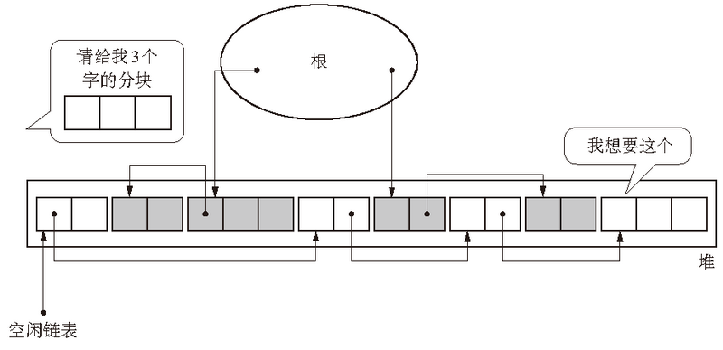
当只利用一个空闲链表时，需要遍历多次空闲链表才能分配 3 个字的分块。
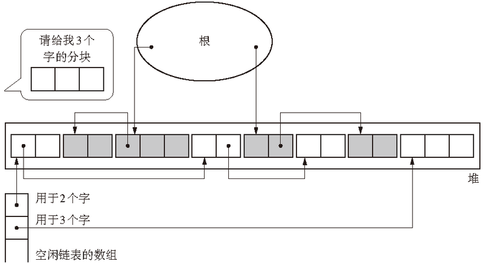
这次数组的各个元素都位于空闲链表的前面，第 1 个元素是由 2 个字的分块连接的空闲链表的开头，第 2 个元素是由 3 个字的分块连接的空闲链表的开头。因此，例如在分配 3 个字的分块时，只要查询用于 3 个字的空闲链表就够了。比起只利用一个空闲链表来说，此方法大幅节约了分配所需要的时间。
不过请稍等，这里有一处需要我们留意。那就是到底制造多少个空闲链表才好呢？用于 2 个字的空闲链表、用于 3 个字的、用于 500 个字的 …… 照这样下去，我们就得准备无数个空闲链表了。
一般情况下，mutator 很少会申请非常大的分块。为了应对这种极少出现的情况而大量制造空闲链表，会使得空闲链表的数组过于巨大，结果压迫到内存空间。
因此，我们通常会给分块大小设定一个上限，分块如果大于等于这个大小，就全部采用一个空闲链表处理。有人可能会想：“这样一来，最后不还是没能有效率地搜索大的分块吗？”然而，因为这种分配非常大的分块的情况是极为罕见的，所以效率低一点也不是什么大问题。比这更为重要的是怎么去更快地搜索 mutator 频繁申请分配的小分块，把关注的重点移到这上面来才是更精明的做法。打个比方，如果设定分块大小上限为 100 个字，那么准备用于 2 个字、3 个字、……、100 个字，以及大于等于 101 个字的总共 100 个空闲链表就可以了。
利用多个空闲链表时，我们需要修正 new_obj() 函数以及 sweep_phase() 函数。修正后的 new_obj() 函数以及 sweep_phase() 函数：
利用多个空闲链表的 new_obj() 函数伪代码：
1 | new_obj(size) |
利用多个空闲链表的 sweep_phase() 函数伪代码：
1 | sweep_phase() |
BiBOP 法
BiBOP 是 Big Bag Of Pages 的缩写。含义是将大小相近的对象整理成固定大小的块进行管理的做法。
GC 标记 - 清除算法中会发生碎片化。碎片化的原因之一就是堆上杂乱散布着大小各异的对象。
对此，我们可以用这个方法：把堆分割成固定大小的块，让每个块只能配置同样大小的对象。这就是 BiBOP 法。
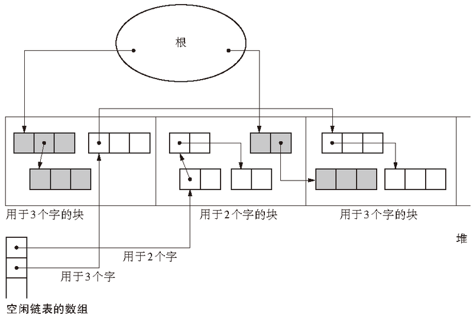
3 个字的对象被整合分配到左数第 1 个和第 3 个块，2 个字的对象被整合分配到左数第 2 个块。像这样配置对象，就会提高内存的使用效率。因为每个块中只能配置同样大小的对象，所以不可能出现大小不均的分块。
但是，使用 BiBOP 法并不能完全消除碎片化。比方说在全部用于 2 个字的块中，只有 1 到 2 个活动对象，这种情况下就不能算是有效利用了堆。
BiBOP 法原本是为了消除碎片化，提高堆使用效率而采用的方法。但像上面这样，在多个块中分散残留着同样大小的对象，反而会降低堆使用效率。
位图标记
在单纯的 GC 标记 - 清除算法中，用于标记的位是被分配到各个对象的头中的。也就是说，算法是把对象和头一并处理的。然而这跟写时复制技术不兼容。
对此我们有个方法，那就是只收集各个对象的标志位并表格化，不跟对象一起管理。在标记的时候，不在对象的头里置位，而是在这个表格中的特定场所置位。像这样集合了用于标记的位的表格称为“位图表格”（bitmap table），利用这个表格进行标记的行为称为“位图标记”。位图表格的实现方法有多种，例如散列表和树形结构等。为了简单起见，这里我们采用整数型数组。
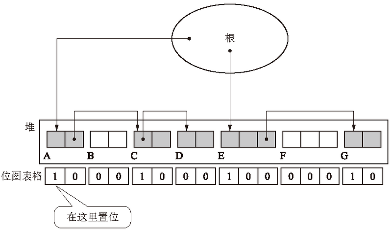
在位图标记中重要的是，位图表格中位的位置要和堆里的各个对象切实对应。一般来说，堆中的 1 个字会分配到 1 个位。
位图标记中的 mark() 函数伪代码：
1 | mark(obj) |
在这里，WORD_LENGTH 是个常量，表示的是各机器中 1 个字的位宽（例如 32 位机器的 WORD_LENGTH 就是 32）。obj_num 指的是从位图表格前面数起，obj 的标志位在第几个。如上图的 E，它的 obj_num 值就是 8。但下图中位的排序顺序和上图是相反的。因此，E 的标志位是从 bitmap_table[0] 的右边起第 9 个位。
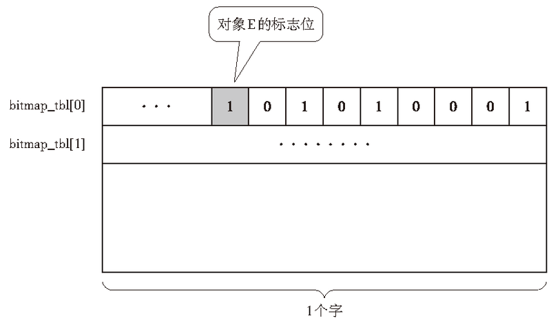
我们用 obj_num 除以 WORD_LENGTH 得到的商 index 以及余数 offset 来分别表示位图表格的行编号和列编号。第 6 行和第 7 行中用到了位运算，看上去有些复杂，实际上只是干了件非常简单的事情。
和在对象的头中直接置标志位的方法相比，该方法稍微有些复杂，但是这样做有两个好处。
优点
与写时复制技术兼容
以往的标记操作都是直接对对象设置标志位，这会产生无谓的复制。
然而，使用位图标记是不会对对象设置标志位的，所以也不会发生无谓的复制。当然，因为对位图表格进行了重写，所以在此处会发生复制。不过，因为位图表格非常小，所以即使被复制也不会有什么大的影响。
此外，以上问题只发生在写时复制技术的运行环境（Linux 等）中，以及频繁执行 fork() 函数的应用程序中。也就是说，它对于一般的程序来说完全不是问题。
清除操作更高效
不仅在标记阶段，在清除阶段也可以得到好处。以往的清除操作都必须遍历整个堆，把非活动对象连接到空闲链表，同时取消活动对象的标志位。
利用了位图表格的清除操作则把所有对象的标志位集合到一处，所以可以快速消去标志位。
位图标记的sweep_phase() 函数伪代码：
1 | sweep_phase() |
与一般的清除阶段相同，我们用 sweeping 指针遍历整个堆。不过，这里使用了 index 和 offset 两个变量，在遍历堆的同时也遍历位图表格。
第 6 行到第 12 行是从堆的开头开始遍历。第 7 行是调查遍历过程中与对象对应的标志位。当对象没有设置标志位时，程序会在第 8 行和第 9 行将此对象连接到空闲链表。当对象已经设立了标志位时，程序就不会在此进行消除位的操作，而是放到之后一并进行。
第 10 行、第 11 行是遍历位图表格，第 12 行是遍历堆。
第 14 行、第 15 行是把所有在位图表格中设置的位取消。因为能够一并消除标志位，所以能够有效地取消位。
要注意的地方
在进行位图标记的过程中，有件事情我们必须注意，那就是对象地址和位图表格的对应。就像之前和大家说明的那样，想通过对象的地址求与其对应的标志位的位置，是要进行位运算的。然而在堆有多个，对象地址不连续的情况下，我们无法用单纯的位运算求出标志位的位置。因此，在堆为多个的情况下，一般会为每个堆都准备一个位图表格。
延迟清除法
清除操作所花费的时间是与堆大小成正比的。也就是说，处理的堆越大，GC 标记 - 清除算法所花费的时间就越长，结果就会妨碍到 mutator 的处理。
延迟清除法（Lazy Sweep）是缩减因清除操作而导致的 mutator 最大暂停时间的方法。在标记操作结束后，不一并进行清除操作，而是如其字面意思一样让它“延迟”，通过“延迟”来防止 mutator 长时间暂停。
延迟清除法中的 new_obj() 函数伪代码：
1 | new_obj(size) |
在分配时直接调用 lazy_sweep() 函数，进行清除操作。如果它能用清除操作来分配分块，就会返回分块；如果不能分配分块，就会执行标记操作。当 lazy_sweep() 函数返回 NULL 时，也就是没有找到分块时，会调用 mark_phase() 函数进行一遍标记操作，再调用 lazy_sweep() 函数来分配分块。在这里没能分配分块也就意味着堆上没有分块，mutator 也就不能再进行下一步处理了。
lazy_sweep() 函数伪代码：
1 | lazy_sweep(size) |
lazy_sweep() 函数会一直遍历堆，直到找到大于等于所申请大小的分块为止。在找到合适分块时会将其返回。但是在这里 $sweeping 变量是全局变量。也就是说，遍历的开始位置位于上一次清除操作中发现的分块的右边。
当 lazy_sweep() 函数遍历到堆最后都没有找到分块时，会返回 NULL。
因为延迟清除法不是一下遍历整个堆，它只在分配时执行必要的遍历，所以可以压缩因清除操作而导致的 mutator 的暂停时间。这就是“延迟”清除操作的意思。
我们已经知道，通过延迟清除法可以缩减 mutator 的暂停时间，不过这是真的吗？稍微想想看就会明白，延迟清除的效果是不均衡的。打个比方，假设刚标记完的堆的情况如下图 所示。
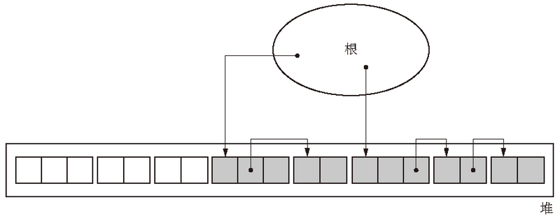
也就是说，垃圾变成了垃圾堆，活动对象变成了活动对象堆，它们形成了一种邻接的状态。在这种情况下，程序在清除垃圾较多的部分时能马上获得分块，所以能减少 mutator 的暂停时间。然而一旦程序开始清除活动对象周围，就怎么也无法获得分块了，这样就增加了 mutator 的暂停时间。
结果，如果一下子清除的堆大小不一定，那么 mutator 的暂停时间就会增大。
关于保持所清除的堆大小的方法，后文详细说明。
虽然在这里没有特别提及，不过标记阶段导致的暂停时间和清除阶段导致的暂停时间一样，也是个问题。关于如何改善这个问题，也是在后文详细说明。